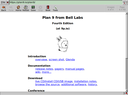
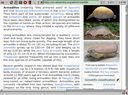
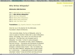
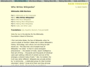

Welcome to the Dillo Website
Dillo is a fast and small graphical web browser with the following features:
- Multi-platform, running on Linux, BSD, MacOS and even Atari.
- Written in C and C++ with few dependencies.
- Implements its own real-time rendering engine.
- Low memory usage and fast rendering, even with large pages.
- Uses the fast and bloat-free FLTK GUI library.
- Support for HTTP, HTTPS, FTP and local files.
- Extensible with plugins written in any language (search on GitHub).
- Is free software licensed with the GPLv3.
- Helps authors to comply with web standards by using the bug meter .
Screenshots
 {kind=link}
{kind=link}
 

{kind=link}

{kind=link}
...check the archives for more pictures.
Project objectives
- Lower the barrier of entry to the web.
- Support old or small machines and slow connections.
- Personal security and privacy.
- High software efficiency.
Check the old website for more details.
Download
Download Dillo from the git repository and follow the instructions in the README to install it.
Contributing
We always welcome contributions, here are several ways in which you can help:
- Use Dillo to browse the web and if you find something that is not working, report it.
- Spread the word, so the world knows Dillo exists and is still alive.
- Implement some new feature or fix some bug and send us a patch or create a pull request.